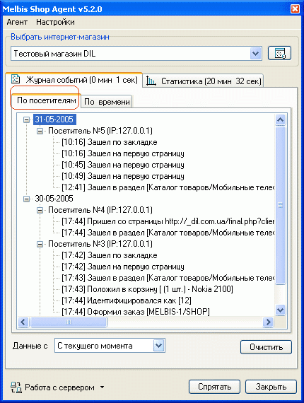
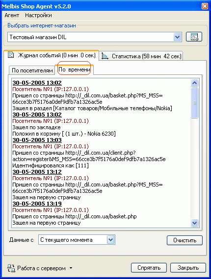
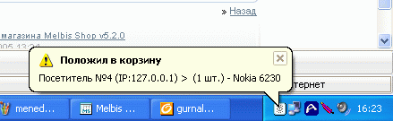
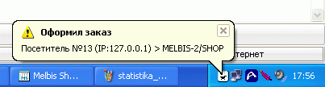

Журнал событий Melbis Shop Agent позволяет в реальном масштабе просматривать события, происшедшие начиная с определенного момента времени, задаваемого в нижней части окна программы, по настоящий момент, а именно: дату и время входа каждого посетителя, откуда он зашел в магазин, какие страницы посещал, какой товар отбирал в корзину, идентифицировался ли на сайте и оформлял ли заказ.
При выборе отображения журнала по посетителям, эти события группируются по дням, в пределах одного дня - по посетителям:

При выборе отображения журнала по времени, указанные выше события приводятся в хронологическом порядке:

При свернутом в трей окне агента, о факте помещения посетителем товара в корзину сообщает всплывающяя подсказка

Возможны аналогичные уведомления о входе покупателя и изменении заказа (см.настройки Melbis Shop Agent).
При оформлении заказа кроме появления всплывающей подсказки изменяется значок агента в трее и вместо "глаза" появляется "корзина", привлекающая внимание своим миганием до тех пор, пока не будет открыто окно Melbis Shop Agent для просмотра информации о заказе:
